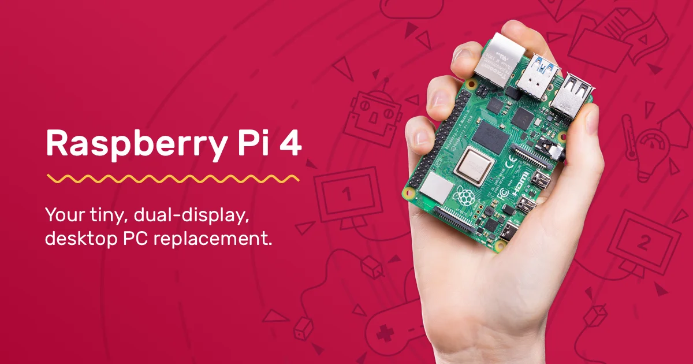
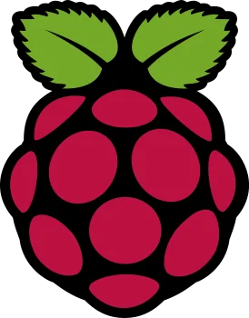
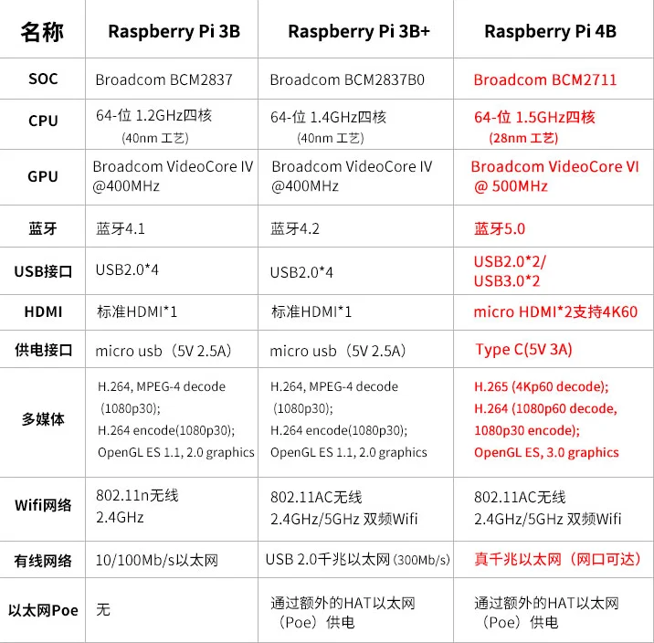
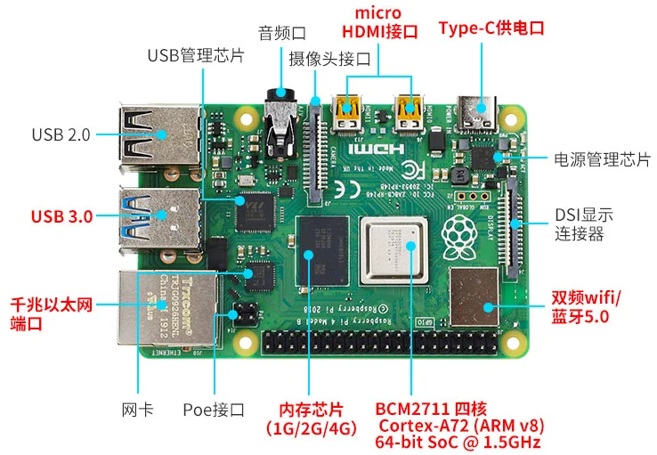
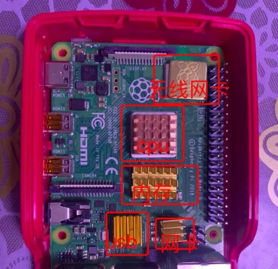
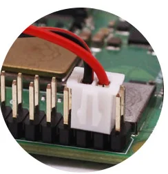
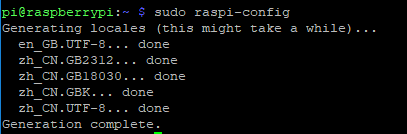

树莓派，Raspberry Pi，简写为 RasPi。官网地址


基本环境搭建
树莓派简介
树莓派每一代均使用博通（Broadcom）出产的ARM架构处理器，内存在256MB和4GB之间，主要使用 SD 卡或者 TF 卡作为存储媒体，配备 USB 接口、HDMI 的视频输出（支持声音输出）和 RCA 端子输出，内置 Ethernet/WLAN/Bluetooth 网络链接的方式（依据型号决定），并且可使用多种操作系统。产品线型号分为A型、B型、Zero 型和 ComputeModule 计算卡。树莓派基金会提供了基于ARM架构的 Debian、Arch Linux 和 Fedora 等的发行版系统，可以在官网[1]下载。2019年6月底，树莓派基金会发布了树莓派4，处理器升级为1.5GHz的博通 BCM2711（四核Cortex-A72），增大了板载内存容量，为1/2/4GB，蓝牙升级为5.0，拥有2个USB2.0接口，2个USB3.0接口，电源也采用了较新的USB-C接口。[2]
组装配件
我使用的是最新版的树莓派4B[3]，相比以往的版本，最新版的变化还是喜人的，具体参数对比树莓派3B/3B+如下：

树莓派4B的主板模块功能分布如下图：

基础硬件
从淘宝购买到手后的树莓派官方版包含以下基础硬件（无数量说明的硬件均是1件）：
- 主板（已焊接CPU和内存）
- typr-c电源
- 红白外壳
- 散热片（5片）
- SD卡（16 GB）
- USB读卡器
- HDMI转micro HDMI线
- VGA转micro HDMI线
- 散热风扇
- 固定螺丝（8件）
安装散热片
为了避免树莓派工作期间主板上硬件过热而损毁，需要给主板上的主要硬件进行散热处理。
- 粘贴散热片
一共有5块大小不一的散热片，分别对CPU、内存、USB管理器、有线网卡、无线网卡进行粘贴，效果图如下：
 - 安装散热风扇
安装风扇前后可以进行对比 CPU 的温度，使用/opt/vc/bin/vcgencmd measure_temp可查看具体温度，如果温度不会过高，我个人不建议安装风扇，因为不加控制开关的风扇带来的噪声影响还是很明显的。
散热风扇通常有很多种，风扇的大小建议选择长宽30mm两线制的，一般红色线是正极，黑色线是负极。 所以在树莓派上使用时，红色线应插到GPIO针脚5V上，黑色线应插到针脚GND上，具体针脚位置可参照针脚定义。风扇的LOGO标签是出风口，可以将风扇LOGO对着芯片吹风， 也可以将风扇LOGO朝外，这样也能将主板热量吸走排出去。效果图如下：

系统镜像及刻录系统
树莓派可支持的系统有多个，而初次使用树莓派还是使用官方提供的系统镜像，体验原汁原味的树莓派。从官网地址下载 Raspbian 最新版系统镜像文件，当然也可以选择NOOBS 镜像，二者本质没有多大差异，官方提供两种方式自然都可以选择。
格式化SD卡
使用SD卡格式化软件对SD卡进行格式化，打开软件后会自动选择SD卡盘符，选择 quick format后点击 format 即可完成格式化。不建议使用Windows自带的格式化工具，该工具格式化之后的SD卡性能不佳。
Raspbian镜像安装
格式化完成后，使用Win32DiskImager进行系统镜像烧录。打开 Win32DiskImager 并选择最新版系统镜像即 2020-02-13-raspbian-buster-full.img，选择SD卡盘符，点击写入，等待烧录完成，此时会弹出对话框显示写入成功之类。同时Windows系统会提示无法识别分区是否进行格式化，选择 取消 即不要格式化，因为Linux系统分区已经写入到SD卡中，格式化将导致之前的烧录工作作废。弹出读卡器并取下SD卡，将SD卡插入树莓派的SD卡槽，SD卡的正面与树莓派主板的背面为同一方向。
NOOBS镜像安装
格式化完成后，将 NOOBS 文件解压并将解压后的文件都移动到SD卡根目录下，弹出读卡器并取下SD卡，将SD卡插入树莓派的SD卡槽，SD卡的正面与树莓派主板的背面为同一方向。
启动树莓派及初始配置
- 启动树莓派
将type-c电源连接树莓派主板的type-c接口，将HDMI转micro HDMI线或VGA转micro HDMI线连接micro HDMI接口0（即靠近type-c电源接口的micro HDMI接口），注意接口方向，接反会导致接口磨损，将外接鼠标、键盘、显示器以及网线连接好，打开树莓派电源开关。 - 初始配置
如果是按照 Raspbian 镜像安装的方法烧录的系统，则开机后将直接进入树莓派系统界面，若是按照 NOOBS 镜像安装系统，则启动后出现 NOOBS 界面，此时选择首选项即Raspbian[RECOMMANDDED]然后点击安装（Install），等待安装完成重启即可进入系统界面。
第一次进入树莓派系统，会提示进行初始配置，根据提示设置地区、语言、新密码，然后WiFi设置和更新软件部分可以先跳过（skip），如果没有连接网线则可以设置连接WiFi。系统提示重启选择暂不重启。
远程登录树莓派
初次配置完成树莓派后，为了之后方便管理树莓派，而不需要额外的外接设备，便要设置远程登录，最方便的是设置 SSH 服务，树莓派默认安装了该服务但是没开启。
- SSH
打开终端，输入sudo raspi-config，选择5 Interfacing Options，选择SSH，询问是否开启 SSH 服务选择是，之后点击OK，开启服务后，选择Finish退出设置界面。
为了保证远程登录时树莓派的IP地址是不变的，需要固定树莓派的IP地址即将其地址设置为静态IP，设置方法如下：
在终端下，输入sudo nano /etc/dhcpcd.conf，找到Example static IP configuration，做以下修改：
|
|
- 远程桌面（xdrp）
在树莓派终端下执行sudo apt-get install xrdp，在Windows下可以登录树莓派的远程桌面，按下快捷键win + R输入mstsc，输入树莓派的 IP 地址后点击连接，在认证界面输入树莓派的账号及密码即可登录远程桌面。如若树莓派操作系统安装xrdp后，在windows里用mstsc打开对应的IP地址，登录的过程中出现如下错误（IP地址，用户名，密码正确的情况下），则在树莓派终端执行sudo apt-get install tightvncserver然后重启树莓派即可。
基础配置
启用root
初次登录树莓派的用户账号是pi，开启 root 用户便于更多需要高权限的操作。
- 设置 root 账号密码
在树莓派终端执行sudo passwd root，输入两次想设置的root密码即可/ - 解锁root账号
树莓派终端执行sudo passwd --unlock root即可。 - 切换到root账号
在终端执行su root，输入root密码，切换到root用户下终端的起始符号会变更为#，在终端输入exit便能切换回pi用户。
添加中文输入法
树莓派默认使用英文输入法，想要在树莓派中输入中文可以安装中文字库以及中文输入法。
- 安装中文字库
在树莓派终端输入sudo apt-get install ttf-wqy-zenhei。 - 安装中文输入法
在树莓派终端输入sudo apt-get install fcitx fcitx-googlepinyin fcitx-module-cloudpinyin fcitx-sunpinyin。 - 设置系统支持中文
在树莓派终端输入sudo raspi-config，选择4 Localisation Options，然后选择I1 Change Locale，之后一直按↓按钮，直到出现zh_CN GB2312``zh_CN.GB18030 GB18030``zh_CN.GBK GBK``zh_CN.UTF-8 UTF-8四个选项，在四个选项前按下空格键即可选中同时显示*，按下回车键确认，之后按↓直到最后，选择zh_CN.UTF-8，按回车确认。退出设置界面，终端提示如下图即表示配置成功。
 - 添加中文输入法
打开系统首选项，选择Fcitx，点击左下角的+，将仅显示当前语言的✔去掉，下滑至最底部，选择Google拼音或者Sunpinyin并点击确认即可。切换中文按下快捷键ctrl+space，在中文输入法下可以按下快捷键Ctrl+Shift切换中英文输入法。
更换软件源
树莓派官方系统raspbian自带的是国外的软件源，在国内使用经常会遇到无法下载软件的问题。通过修改系统配置sources.list为国内软件源即可解决网络问题。
- 清华源[4]
在终端输入sudo nano /etc/apt/sources.list，添加以下内容：
|
|
在终端输入 sudo nano /etc/apt/sources.list.d/raspi.list，添加以下内容：
|
|
- 中科大源[5]
将上述源内容中tuna.tsinghua.edu.cn/raspberrypi/改为ustc.edu.cn/raspbian/即可。
树莓派LED灯指示
在使用树莓派过程中，由于一般不对树莓派安装过多外接设备，而是进行远程控制，因此LED灯的状态对判断树莓派的情况具有很大作用。此部分内容参照树莓派实验室对LED灯的解释[2]。
| LED | 颜色 | 功能 | 正常状态 |
|---|---|---|---|
| ACT | 绿色 | card status | 闪烁:SD卡正在活动（类似电脑的硬盘灯） |
| PWR | 红色 | power | 不闪烁:正常 |
| FDX | 橙 | full duplex | 亮:全双工/不亮:半双工 |
| LNK | 橙 | link | 亮:网络连接成功 |
| 100 | 橙 | 100 Mbps | 亮:100 Mbps/不亮:10 Mbps |
注意事项
- 禁止将树莓派的引脚短路，特别是VCC和GND，短路会造成芯片烧毁无法恢复。
- 树莓派启动需要几十秒时间，打开电源后1分钟内不可以关闭电源，会影响树莓派的使用寿命。
- SD卡烧录系统完成时，系统会提示格式化，此时不需要格式化，点击取消即可。若点了格式化后树莓派会提示缺失文件，需要重新烧录系统。
- 树莓派4B的HDMI接口变成两个micro-HDMI接口（hdmi0和hdmi1），可以接入两个显示器。如果只连接一个显示器，一定要插入hdmi0接口，也就是靠近type-C电源接口的那一个，才可以正常显示；如果只插入hdmi1接口，会出现显示器无法显示的情况。
进阶配置
结束
树莓派目前已经具有很好的生态以及广泛的使用群体，也有不少技术论坛和官方技术博客，其本身可以实现很多功能需求，对于有需要和想玩树莓派的人可以逐渐深入接触，也许将带来奇妙的体验。